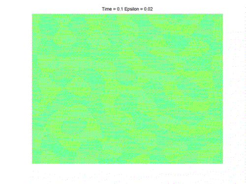

Spinodal Decomposition:
A pictorial view of the formation of binary alloys

If a homogeneous high-temperature mixture of two metallic components
is rapidly cooled to a lower temperature, then a sudden phase
separation can set in. That is, the mixture becomes inhomogeneous and
forms a fine-grained structure, more or less alternating between the
two metal components. This numerical numerical simulation shows the
phase separation occuring, as modeled by the Cahn-Hilliard equation.
The color represents the concentration of the two metals. Green
corresponds to an even mixture of metal A and metal B. Red corresponds
to all metal A, blue to all metal B. Notice that the mixture starts
out as an even mixture, and after some time, becomes an inhomogeneous
mixture. Although the patterns formed are not completely symmetric,
they are also not random. Understanding these patterns has been the
subject of much research, going back to the original works of Cahn and
Hilliard. Numerical simulations and subsequent analytical results have
been carried out jointly with Thomas Wanner to understand these
patterns. Our work has lead to a new approach to understanding the
underlying mechanism for this pattern formation.
Credits:
Starring: The Cahn-Hilliard equation
Director: Evelyn Sander
Filmed on location in two dimensions
Based on two original articles of Evelyn Sander and Thomas Wanner
For more information, see our upcoming article Monte Carlo simulations
for spinodal decomposition, to appear in the Journal of Statistical
Physics, as well as a preprint of our theoretical results, Unexpectedly linear
behavior for the Cahn-Hilliard equation.
The Equation
d/dt(u)=-laplacian(epsilon^2 laplacian u + f(u))
with Neumann boundary conditions and
where -f is the derivative of a double-well potential.
Copyright 1999, all rights reserved.